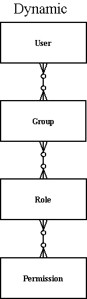

Overview
This component provides a highly flexible security framework It is based on code from the Turbine framework, but has been expanded and can be used in any container compatible with the Avalon framework.
- Allow pluggability via Avalon components of various entities.
- Explicit Model interface allows generic entities to be glued together in a custom model very quickly.
- Provide adapters to various other security systems
- Solve most common problems in dealing with security
- Not enforce assumptions about how a security framework should be setup.
Matrix
| Basic Model | Dynamic Model | Turbine Model | ||||||||||
|---|---|---|---|---|---|---|---|---|---|---|---|---|
| User | Group | User | Group | Role | Permission | Delegates | User | Group | Role | Permission | UserGroupRole | |
| Memory | X | X | X | X | X | X | X | X | X | X | X | X |
| Hibernate | X | X | X | X | X | X | X | X | X | X | X | X |
| Torque | X | X | X | X | X | X | X | X | X | X | X | X |
| NT | X | X | X | |||||||||
Common Security Implementations
The two most common models for security are embodied in the "Basic" and "Dynamic" models. A third model, "Turbine", demonstrates customizing the "Dynamic" model by adding a concept of a global group.
Dynamic
For lack of a better name, this one is called Dynamic because you can configure all the relationships. In it, you have a set of permissions that are related in a many to many relation ship with a set or roles. Those roles are related in a many to many relationship with a set of groups. A user is in a many to many relationship with a set of groups.
The memory, hibernate and torque packages currently implement this security model.
Turbine
This model is based on what the Turbine application server uses, and leverages the Dynamic model. It merely adds the concept of a "global group" which is a toplevel group to the Dynamic model (which allows user - role assignments with or without a group). However, what makes this different is that instead of roles being related just to groups, there instead is a many to many relationship between users and groups and roles. So you pick a user, pick their role, and their group, and that is their permissions.
Put it in another way, a simple example would be that a user has just a (global) role assigned (global group) and only optionally is assigned to a group. This allows to have flexible groups assignments and even cascaded security controls: check user's (global) role (this is the default) - no group assignment required; check group assignment(s); check role assignment of each (non global) group. Permissions are handled like in dynamic model and are as non global group role assignments optional.
The memory, hibernate and torque packages currently implement this security model.
Basic
This model is very simple and was originally inspired by OSUser's security model. In it, you have users, and groups, and security is based on a user belonging to a group. Users can belong to multiple groups. So groups become the equivalent of roles/permissions.
The memory, nt torque and hibernate packages currently implement this security model.
Diagrams
|  |
Simple
Usage of InMemory components
The InMemory components implement the Basic model. All data is strictly in memory, and is not persisted. Therefore when your application stops, all values are lost. However, this is very useful in unit testing and prototyping using the Security component. Notice how role, user, group, and permission managers are all Avalon components as well? This allows you to swap one component out for another. Say you wanted to provide your own group manager that checked that a group existed in NT. You could swap out the MemoryGroupManager implementation for a NTGroupManager, assuming you kept the API the same.
Configuration
This uses the integrated role and component config XML. Check the /src/test directory for the most up-to-date examples of the configuration files used in unit testing!
<my-system>
<component
role="org.apache.fulcrum.security.SecurityService"
class="org.apache.fulcrum.security.BaseSecurityService">
</component>
<component
role="org.apache.fulcrum.security.UserManager"
class="org.apache.fulcrum.security.memory.MemoryUserManagerImpl">
</component>
<component
role="org.apache.fulcrum.security.GroupManager"
class="org.apache.fulcrum.security.memory.MemoryGroupManagerImpl">
</component>
<component
role="org.apache.fulcrum.security.RoleManager"
class="org.apache.fulcrum.security.memory.MemoryRoleManagerImpl">
</component>
<component
role="org.apache.fulcrum.security.PermissionManager"
class="org.apache.fulcrum.security.memory.MemoryPermissionManagerImpl">
</component>
<component
role="org.apache.fulcrum.security.ModelManager"
class="org.apache.fulcrum.security.memory.basic.MemoryModelManagerImpl">
</component>
</my-system>
Adapters
Turbine
For Turbine 4.x or above use the common Security Turbine.
In org.apache.fulcrum.security.adapter.turbine is an implementation of the Turbine Security Service.
This is designed to allow you to run the Fulcrum Security Service, but have Turbine 2.3's be able to query, through
the adapter the Fulcrum Security service.
OSUser
In org.apache.fulcrum.security.adapter.osuser is an implementation of the various *Provider classes
required by OSUser. In order to have OSUser load up these classes, you must add this to your ouser.xml configuration
file.
<!-- Fulcrum providers -->
<provider class="org.apache.fulcrum.security.adapter.osuser.FulcrumAccessProvider"/>
<provider class="org.apache.fulcrum.security.adapter.osuser.FulcrumCredentialsProvider"/>
<!-- don't have a propertyset provider, so just return a memory one. -->
<provider class="com.opensymphony.user.provider.memory.MemoryProfileProvider" />
When using the FulcrumAccessProvider and FulcrumCredentialsProvider, you must first pass into them the
Fulcrum SecurityService class. They both inherit from BaseFulcrumProvider, so you can just do
BaseFulcrumProvider.setSecurityService(securityService) before OSUser calls them for the
first time.
Implementation Details
Hibernate
With the Hibernate SPI, you can just subclass the BasicUserImpl/DynamicUserImpl class, or implement the User interface, provide your own mapping .hbm file and then any additional user properties will be persisted! Very easy customization for your environment!
Torque
The Torque SPI provides four different (basic, dynamic type and two turbine schemata) schema mappings for the different security models (in the schema directory). You can easily adjust these to your
needs. If adjustments are needed, set up the project.properties file according to your database environment (see the
Torque 4.x Maven Plugin Documentation for reference) and use Maven to
generate the Torque-OM-classes and to re-built the JAR.
Torque Dynamic Model
The component configuration must refer to the correct Torque-OM-classes as in the following example for the Dynamic model:
<userManager>
<className>org.apache.fulcrum.security.torque.om.TorqueDynamicUser</className>
</userManager>
<groupManager>
<className>org.apache.fulcrum.security.torque.om.TorqueDynamicGroup</className>
</groupManager>
<roleManager>
<className>org.apache.fulcrum.security.torque.om.TorqueDynamicRole</className>
</roleManager>
<permissionManager>
<className>org.apache.fulcrum.security.torque.om.TorqueDynamicPermission</className>
</permissionManager>
As a default, the Torque Security Service uses fulcrum as the name of the connection pool for the tables used. This should be considered
in the Torque configuration when the service is deployed.
Another mapping default is provided for the Turbine models.
Additionally Torque-OM peer classes could be made configurable by using a (marker) interface.
This is supported out of the box in schema configuration Torque 5.0 release.
Before class annotation had to be done manually, check examples in Fulcrum Security Torque!
and for background cft. Torque-309.
Torque Turbine Model
The Turbine model may be as simple as the Dynamic Model, but this is the most expanded configuration:
<userManager>
<className>org.apache.fulcrum.security.torque.om.TurbineUser</className>
<peerClassName>org.apache.fulcrum.security.torque.om.TurbineUserPeerImpl</peerClassName>
<!-- required for acl custom mapping -->
<userGroupRoleManager>
<peerClassName>org.apache.fulcrum.security.torque.om.TurbineUserGroupRolePeerImpl</peerClassName>
</userGroupRoleManager>
</userManager>
<groupManager lazy="true">
<className>org.apache.fulcrum.security.torque.om.TurbineGroup</className>
<peerClassName>org.apache.fulcrum.security.torque.om.TurbineGroupPeerImpl</peerClassName>
</groupManager>
<roleManager lazy="true">
<className>org.apache.fulcrum.security.torque.om.TurbineRole</className>
<peerClassName>org.apache.fulcrum.security.torque.om.TurbineRolePeerImpl</peerClassName>
</roleManager>
<permissionManager>
<className>org.apache.fulcrum.security.torque.om.TurbinePermission</className>
<peerClassName>org.apache.fulcrum.security.torque.om.TurbinePermissionPeerImpl</peerClassName>
</permissionManager>
userManager has sub-element userGroupRoleManager to get the ACM (Access Control List) with correct (custom) relationships. Additionally the attribute lazy may be set for groupManager and roleManager, which indicates retrieval of dependent relationships occurs only if explicitely requested.
Torque Turbine Model Web App
Check out the Turbine Web App from the maven archetype catalog to test a web app with example code. Find the archetype with
// filter archeype catalog by groupid:artefactid = org.apache.turbine:turbine-webapp-5.1
mvn archetype:generate
git clone https://gitbox.apache.org/repos/asf/turbine-archetypes.git
mvn clean install
NT
If you use the BasicModel with the NT implementation, you have a wholly NT based authentication scheme! The groups map onto NT groups, while the users are authenticated against NT as well. This does require you to ask your users for their NT username and password however, we don't have NTLM working as yet.